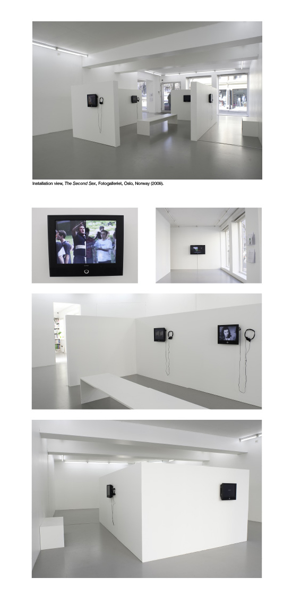

Pressrelease
The first solo show of 2009 at the Fotogalleriet is Katja Høst’s project: The Second Sex. The title of the show derives from the classic book by Simone de Beauvoir carrying the same title, but in Høst’s work the male sex is the target of investigation and humoristic comment.
Women’s liberation has made the modern woman more conscious of the construction of her gender role, but the question remains whether she is equally aware of the impact she has on the construction of the male social sex role, a role she influences through her choice of partner. Women now have the power to define their “other” sex, but how is this power exercised?
Using her own experience as a starting point, Høst combines scientific theories with mass media’s representations of gender and a woman’s point of view on gender issues. These multiple reference points are juxtaposed in an installation where seven videos shed light on different aspects of the male social sex role.
In the video Hangman we experience how the man is the first sex to be “hung” in a stereotype description when a woman is to answer on the man’s behalf as well as her own. Instructual Interviews I and II presents a group of women’s thoughts on gender questions edited into the footage from two Instructional Film’s. These films were produced in large numbers during the 50’s in the USA to promote moral etiquette and guidance on family values.
The works in the exhibition share one clear hypothesis; women participate in defining the male sex role. What remains unclear and open for discussion is how this power is put to use.
|  |